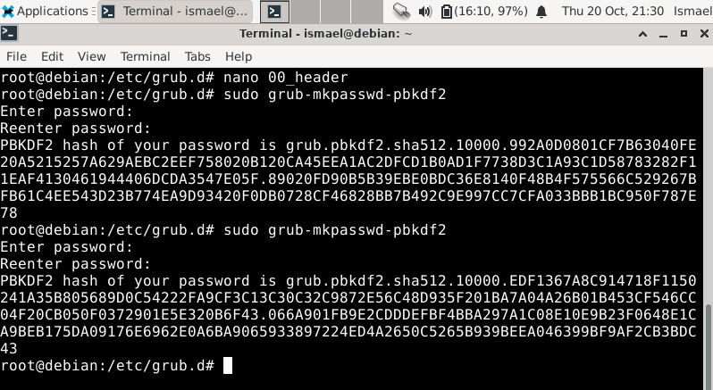

Es un cargador de arranque o bootloader que nos permite elegir que sistema operativo arrancar de los instalados. Se usa principalmente en sistemas Linux.
Esta formado por un conjunto de scripts y ficheros, entre ellos:
grub-mkconfig o update-grub y sus instrucciones sirven para modificar el /etc/default/grub.cfg.Para comenzar haremos una copia de seguridad de los archivos/scripts del grub. Esto se hará copiando la carpeta /etc/grub.d/ a otro directorio, preferiblemente a uno externo por si tenemos cualquier problema.
Esto es una de las cosas más sencillas que se pueden configurar en el grub y pueden evitar el acceso del dispositivo de forma no autorizada en el caso que un atacante tenga nuestro equipo de forma física.
Para esto tendremos que modificar el archivo /etc/default/grub cambiando el parámetro GRUB_TIMEOUT a 0.
Primero abriremos con un editor el archivo 00_header ubicado en /etc/grub.d/. Una vez dentro nos iremos al final del archivo y escribiremos lo siguiente:
Una vez hecho lo anterior podremos cambiar la contraseña escrita totalmente en plano a su valor cifrado. Esto se hará con el comando grub-mkpasswd-pbkdf2, nos pedirá qué contraseña queremos cifrar y su confirmación y ya nos imprimirá por pantalla el hash. Hacemos esto con todas las contraseñas que tengamos en el anterior archivo.

Ahora simplemente modificamos en lo escrito en 00_header password por password_pbkdf2 y cambiamos la contraseña en plano por su hash correspondiente.
Por último hacemos update-grub2.
Una vez terminado al reiniciar veremos lo siguiente:
Esto significa que las opciones que introducimos anteriormente han funcionado y tendremos nuestras entradas del grub protegido.
Tenemos otras opciones que pueden estar interesantes como GRUB_DEFAULT esta opción definirá cuál entrada del grub se ejecutará por defecto, así que en caso de tener varios sistemas poner la posición al cuál queremos entrar. Esto junto al TIMEOUT=0 podría forzar la entrada a un sistema operativo concreto.
Para securizar más aún la autenticación del GRUB podemos decirle al sistema de que sólo se pueda iniciar sesión con usuarios específicos.
Esto se hace en /etc/grub.d/10_linux buscando la siguiente línea e introduciendo detrás de ${CLASS} –users seguido de los usuarios.